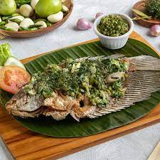

Resep Ikan Cabe Ijo

Bahan
- 3-4 ekor ikan
- kunyit secukupnya
- 2 siung bawang putih
- 1 buah jeruk nipis
- 4 siung bawang merah
- garam secukupnya
- 2 buah kemiri
- minyak secukupnya
- 2 siung bawang putih
- 10 buah cabai hijau besar
- 1/2 sdt gula dan garam
Langkah
-
Cuci bersih ikan, kerat-kerat dan lumuri jeruk nipis. Bilas bersih
setelah 10 menit.
- Haluskan bawang putih, jahe, garam dan lada bubuk.
- Lumuri ikan dengan bumbu halus. Diamkan selama 10 menit.
-
Siapkan sambal ijo, haluskan semua bahan, tak perlu sampai halus
lembut.
-
Panaskan minyak, goreng ikan hingga matang. Angkat dan sajikan di
piring.
-
Tumis sambal hingga harum dan matang. Angkat. Tuang di atas ikan
goreng.